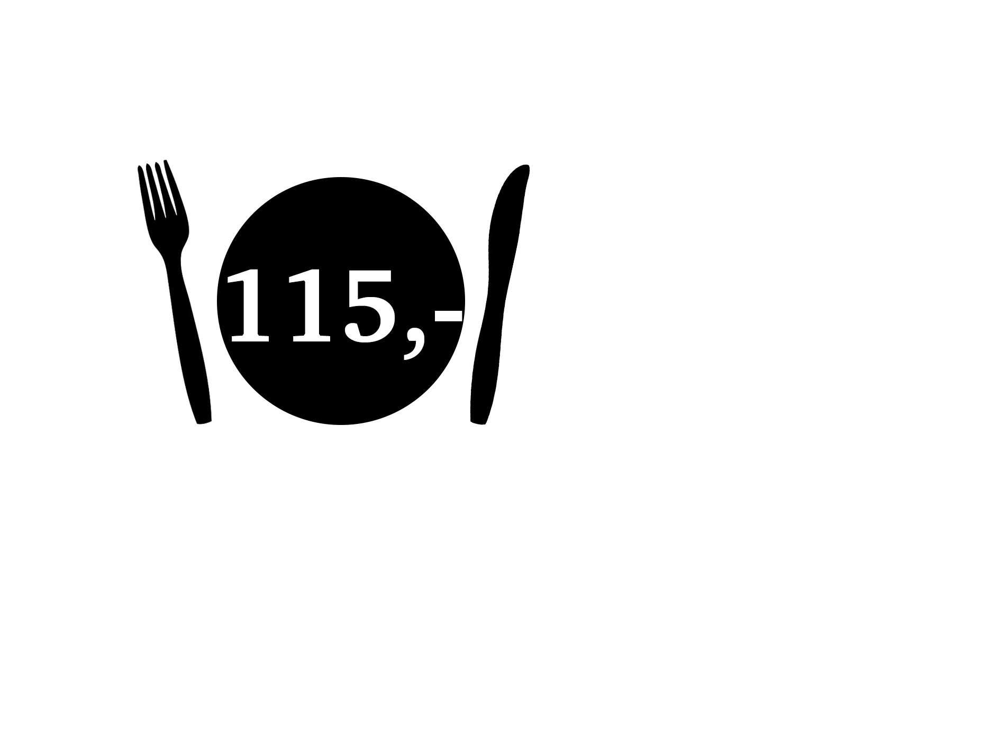

Cafe
MANDAG – SØNDAG KL. 12 – 15
MORGENBUFFET
MORGENBUFFET KL. 9 - 11 (MAN-FRE)
koldhævet øko boller, yoghurt med müsli, ost, pølser, frugt, smør, hjemmelavede nutella og marmelade
FROKOSTBUFFET
FROKOSTBUFFET KL. 11.00 - 13.30 (MAN-FRE) 
vores buffet varierer dagligt men indeholder som minimum altid 1 varm kødret, 1 fiskeret, 1 grov salat,
1 grøn salat, diverse pålæg af egen import samt stort ostebord
SANDWICH MED OKSE
rosa okse, estragonmayo, cornichons, syltet rødløg og salater
SANDWICH MED FISK
kold røget fisk, selleri-remoulade, fennikel-crudité, dild og æble
DAGENS SALAT
diverse lækre friske salater, grønsager og hjemmelavet dressing serveres med brød og smør
CHARCURTERI
pølser og skinker af egenimport, med fermenteret tilbehør
DAGENS SUPPE
kartoffel og porresuppe med purløg og porreaske serveret med urter, sprødt hertil brød og smør
RESTAURANT
MANDAG – LØRDAG KL. 17 – 21
FORRET
NYTÅRSTORSK
rødbeder, røget æggecreme, karse og fermenteret sennep i fløde
CHARCUTERI
pølser og skinker af egenimport, med fermenteret piccalilly, sennep og aioli
KARTOFFEL og PORRESUPPE
"brændende kærlighed", purløg og porreaske
RØRT TARTAR
estragonmayo, fermenteret fennikel, små salater og puffet kartoffel
HOVEDRET
KLASSISK BURGER
hakkebøf, gammel knas, bløde løg, syltet agurk og hjemmelavet fritter med estragonmayo
ROSASTEGT OKSE MED SVAMPE
røget løg, sort hvidløg, timian og sauce
PORCHERET SKÆRISING
bakskuld, glaskål, dild og gammelt brød
GRYDESTEGT BLOMKÅL
"Cæsar", mere kål, havgus og citrus
DESSERT
OSTETALLERKEN
knækbrød, sødt, salt
CITRON, CITRON og CITRON
lemoncurd, Verbena is, "tærte" og marengs
WEEKEND BRUNCH
LØRDAG og SØNDAG KL. 10 – 14
BRUNCHBUFFET
Græsk yoghurt // Sprød hjemmelavet müsli og ymer drys // Marineret Frugtsalat // 3 gode oste med sylt, knækbrød og marmelader // Hjemmelavet nutella // 3 slags danske pålæg med klassiske garniturer // Grøntsagsstænger med haydari, hummus og ostecreme // Morgenshot eller juice og grøntsager // Røget fisk med stuvet spinat // Lun leverdreng med svampe og bacon // Blødkogt æg // Brunchpølser med stegte tomater og urter // Pommes galette / røsti // Hvedekernesalat med æbler, kål og persille // Kanelsnegle med glasur // Croissanter // 3 slags hjemmebagt økologisk koldhævet brød med øko smør //